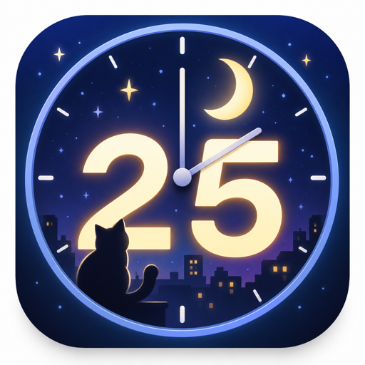
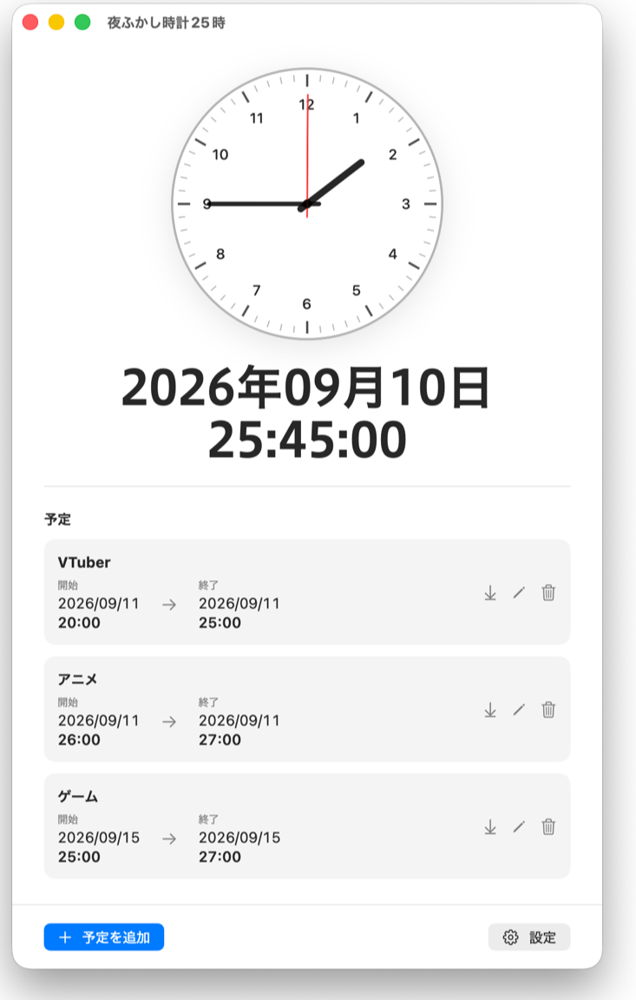
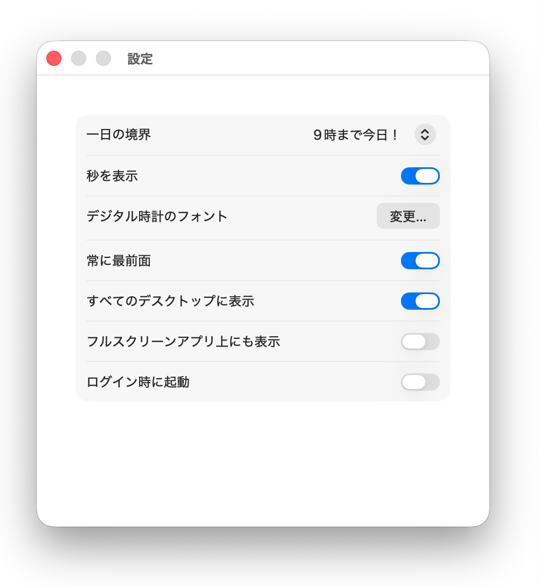

一日の終わりを、自分で。
午前何時までを前日の続きにするか、0〜12時から選べます。アナログ時計は、いつもの実際の時刻を表示。

夜ふかし時計25時iOS版 開発協力者募集
macOS版はSwift／SwiftUIで実装済み。25時記法の変換ロジックとテストがあり、MIT Licenseで利用・改変できます。
最初から全機能を完成させる必要はありません。設計相談、一部分だけの参加、設計提案やコードレビューも歓迎します。
仕様説明、テスト、フィードバックはプロジェクト側が担当。貢献者はご本人の希望を確認し、iOS版開発者としてREADMEとサイトに掲載します。
YOUR DAY, AT YOUR OWN PACE
夜の続きを、25時で。
あなたの一日の区切りに寄り添う、
Macのための時計と予定管理。
Developer ID署名・公証は未実施です。ご利用前に
夜ふかし時計25時
9月10日、今日の続き。
25:25
一日の境界を午前5時にした場合の表示例
A LITTLE MORE OF TODAY
午前何時までを前日の続きにするか、0〜12時から選べます。アナログ時計は、いつもの実際の時刻を表示。
25時、26時を使って予定を入力。Calendarへ登録するときは、変換後の日時を確認できます。
フォントやサイズ、最前面表示をあなた好みに。すべてのデスクトップで時計を表示できます。
MAIN WINDOW


MAKE IT YOURS
夜の作業にも、配信の時間にも。
時計の見え方を変えて、いつものMacに。
READY WHEN YOU ARE
macOS 14以降 · Apple Silicon / Intel両対応 · MIT License
このバージョンはアドホック署名で、Developer ID署名・Appleの公証は行っていません。macOSが起動を制限する場合があります。内容をご確認のうえご利用ください。Xcodeでソースからビルドすることもできます。
予定と設定はMac内に保存します。Calendar登録にはアクセス許可が必要です。登録後の同期は、選択したCalendarアカウントの設定に従います。
詳しい使い方を読む ↗SHA-256を確認 ↗